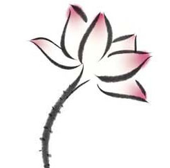

我小学时代使用的一本国语字典，被母亲细心地保存了十几年，最近才从母亲的红木书柜里找到。那本字典被粗心的手指扯掉了许多页，大概是拿去折纸船或飞机了，现在怎么回想都记不起来，由于有那样的残缺，更使我感觉到一种任性的温暖。
更惊奇的发现是，在翻阅这本字典时，找到一张已经变了颜色的“白雪公主泡泡糖”的包装纸，那是一张长条的鲜黄色纸。上面用细线印了一个白雪公主的面相。于今看起来，公主的图样已经有一点粗糙简陋了。至于如何会将白雪公主泡泡糖的包装纸夹在字典里，更是无从回忆。
到底是在上国语课时偷偷吃泡泡糖夹进去的，是夜晚在家里温书吃泡泡糖夹进去的，还是有意保存了这张包装纸呢？翻遍国语字典也找不到答案。记忆仿佛自时空遁去，渺无痕迹了。
唯一记得的倒是，那是一种旧时乡间十分流行的泡泡糖，是粉红色长方形、十分粗大的一块，一块要五毛钱。对于长在乡间的小孩子，那时的五毛钱非常昂贵，是两天的零用钱，常常要咬紧牙根才买来一块，一嚼就是一整天，吃饭的时候把它吐在玻璃纸上包起，等吃过饭再放到口里嚼。
父亲看到我们那么不舍得一块泡泡糖，常常生气地说：“那泡泡糖是用脚踏车坏掉的轮胎做成的，还嚼得那么带劲！”记得我还傻气地问过父亲：“是用脚踏车轮做的？怪不得那么贵！”惹得全家人笑得喷饭。
说是“白雪公主泡泡糖”，应该是可以吹出很大气泡的，却不尽然。吃泡泡糖多少靠运气，能吹出气泡的记得大概五块里才有一块，许多是硬到吹弹不动，更多的是嚼起来不能结成固体，弄得一嘴糖沫，赶紧吐掉，坐着伤心半天。我手里的这一张可能是一块能吹出大气泡的包装纸，否则怎么会小心翼翼地夹做纪念呢？
我小时候并不是那种很乖巧的孩子，常常因为要不到两毛钱的零用就赖在地上打滚，然后一边打滚一边偷看母亲的脸色，直到母亲被我搞烦了，拿到零用钱，我才欢天喜地地跑到街上去，或者就这样跑去买了一个“白雪公主”，然后就嚼到天黑。
长大以后，再也没有在店里看过“白雪公主泡泡糖”，都是细致而包装精美的一片一片的“口香糖”；每一片都能嚼成形，每一片都能吹出气泡，反而没有像幼年一样能体会到买泡泡糖靠运气的心情。偶尔看到口香糖，还会想起童年，想起嚼“白雪公主”的滋味，但也总是一闪即逝，了无踪迹。直到看到国语字典中的包装纸，才坐下来顶认真地想起“白雪公主泡泡糖”的种种。
如果现在还有那样的工厂，恐怕不再是用脚踏车轮胎制造，可能是用飞机轮子了——我这样游戏地想着。
那一本母亲珍藏十几年的国语字典，薄薄的一本，里面缺页的缺页、涂抹的涂抹，对我已经毫无用处，只剩下纪念的价值。那张泡泡糖的包装纸，整整齐齐，毫无毁损，却珍藏了一段十分快乐的记忆，使我想起真如白雪一样无瑕的少年岁月，因为它那样白，那样纯净，几乎所有的事物都可以涵容。
那些岁月虽在我们的流年中消逝，但借着非常非常微小的事物，往往一勾就是一大片，仿佛是草原里的小红花，先是看到了那朵红花，然后发现了一整片大草原，红花可能凋落，而草原却成为一个大的背景，我们就在那背景里成长起来。
那朵红花不只是“白雪公主泡泡糖”，可能是深夜里巷底按摩人的幽长的笛声，可能是收破铜烂铁老人沙哑的叫声，也可能是夏天里卖冰淇淋小贩的喇叭声……有一回我重读小学时看过的《少年维特的烦恼》，书里就曾夹着用歪扭字体写成的纸片，只有七个字：“多么可怜的维特！”其实当时我哪里知道歌德，只是那七个字，让我童年伏案的身影整个显露出来，那身影可能和维特是一样纯情的。
有时候我不免后悔童年留下的资料太少，常想：“早知道，我不会把所有的笔记簿都卖给收破烂的老人。”可是如果早知道，我就不是纯净如白雪的少年，而是一个多虑的少年了。那么丰富的资料原也不宜留录下来，只宜在记忆里沉潜，在雪泥中找到鸿爪，或者从鸿爪体会那一片雪。
这样想时，我就特别感恩母亲。因为在我无知的岁月里，她比我更珍视我所拥有过的童年，在她的照相簿里，甚至还有我穿开裆裤的照片。那时的我，只有父母留有记忆，我则是完全茫然了，就像我虽拥有“白雪公主泡泡糖”的包装纸，但那块糖已完全消失，只留下一点甜意——那甜意竟也有赖于母亲爱的保存。
看我吃完两个红心番薯，父亲才放心地起身离去，走的时候还落寞地说：为什么不找个有土地的房子呢？
这次父亲北来，是因为家里的红心番薯有了收成，特地背了一袋给我，还挑选几个格外好的，希望我种在庭前的院子里。他万万没有想到，我早已从郊外的平房搬到城中的大厦，根本是容不下绿色的地方，甚至长不出一株狗尾草，更不要说番薯了。
到车站接了父亲回到家里，我无法形容父亲的表情有多么近乎无望。他在屋内转了三圈，才放下提着的麻袋，愤愤地说：“伊娘咧！你竟住在无土的所在！”一个人住在脚踏不到泥土的地方，父亲不能忍受，这也是我看到他的表情才知道的。然后他的愤愤转成喃喃：“你住在这种上不着天下不落地的所在，我带来的番薯要种在哪里？要种在哪里？”
父亲对番薯的感情，也是这两年我才深切知道的。
有一次是我站在旧家前，看着河堤延伸过来的苇芒花，在微凉秋风中摇动着，那些遍地蔓生的苇芒长得有一人高，我看到较近的苇芒摇动得特别厉害，凝神注视，才突然看到父亲走在那一片苇芒里，我大吃一惊。原来父亲的头发和秋天灰白的苇芒花是同一个颜色，他在遍生苇芒的野地里走了几百公尺，我竟未能看见。
那时我站在家前的番薯田里，父亲来到我的面前，微笑地问：“在看番薯吗？你看长得像羊头一样大了哩！”说着，他蹲下来很细心地拨开泥土，捧出一个精壮圆实的番薯来，以一种赞叹的神情注视着。我带着未能在苇芒花中看见父亲身影的愧疚心情，与他面对面蹲着。父亲突然像儿童一样天真欢愉地叹了一口气，很自得地说：“你看，恐怕没有人种番薯种得比我好了。”然后他小心翼翼地把那个番薯埋入土中，动作像在收藏一件艺术品，神情庄重而带着收获的欢愉。
父亲的神情使我想起幼年有关下番薯的一些记忆。有一次我和几位大陆的小孩子吵架，他们一直骂着：“番薯呀！番薯呀！”我们就回骂：“老芋呀！老芋呀！”
对这两个名词我是疑惑的，回家询问了父亲。那天他喝了几杯老酒，神情甚为愉快，他打开一张老旧的地图，指着台湾的那一部分说：“台湾的样子真是像极了红心的番薯，你们是这番薯的子弟呀！”而无知的我便指着北方广大的大陆说：“那，这大陆的形状就是一个大的芋头了，所以大陆人是芋仔的子弟？”父亲大笑起来，抚着我的头说：“憨囡仔，我们也是大陆来的，只是来得比较早而已。”
然后他用一支红笔，从我们遥远的北方故乡有力地画下来，连到我们所居的台湾南部。那是我第一次在十烛光的灯泡下认识到，芋头与番薯原来是极其相似的植物，并不是我们想象中那么判然有别的。也第一次知道，原来在东北会落雪的故乡，也遍生着红心的番薯！
更早的记忆是从我会吃饭开始的。家里每次收获番薯，总是保留一部分填置在木板的眠床底下。我们的每餐饭中一定煮了三分之一的番薯，早晨的稀饭里也放了番薯，有时吃腻了，我就抱怨起来。
听完我的抱怨，父亲就激动地说起他少年的往事。他们那时为了躲警报，常常在防空壕里一窝就是一整天。所以祖母每每把番薯煮好放着，一旦警报声响，父亲的九个兄弟姐妹就每人抱两三个番薯直奔防空壕，一边啃番薯，一边听飞机和炮弹四处交响。他的结论常常是：“那时候有番薯吃已经是天大的幸福了。”他说完这个故事，我们只好默然地把番薯扒到嘴里去。
父亲的番薯训诫并不是都如此严肃，偶尔也会说起战前在日本人的小学堂中放屁的事。由于吃多了番薯，屁有时是忍耐不住的，当时吃番薯又是一般家庭所不能免，父亲形容说：“因此一进了教室往往是战云密布，不时传来屁声。”他说放屁是会传染的，常常一呼百应，万众皆响。有一回屁放得太厉害，全班被日本老师罚跪在窗前，即使跪着，屁声仍然不断。父亲玩笑地说：“因为跪的姿势，屁声好像更响了。”他说这些的时候，我们通常吃番薯吃得比较甘心，放起屁来也不以为忤了。
然后是一阵战乱，父亲到南洋打了几年仗。在丛林之中，时常从睡梦中把他唤醒，时常让他在思乡时候落泪的，不是别的珍宝，只是普普通通的红心番薯。它烤炙过的香味，穿过数年的烽火，在万金家书也不能抵达的南洋，温暖了一位年轻战士的心，并呼唤他平安地回到家乡。他有时想到番薯的香味，一张像极番薯形状的台湾地图就清楚地浮现出来，思绪接着往南方移动，接下来的图像便是温暖的家园，还有宽广无边结满黄金稻穗的大平原……
战后返回家乡，父亲做的第一件事便是在家前家后种满了番薯，日后遂成为我们家的传统。家前种的是白瓢番薯，粗大壮实，可以长到十斤以上一个；屋后一小片园地是红心番薯，一串一串的果实，细小而甜美。白瓢番薯是为了预防战争逃难而准备的，红心番薯则是父亲南洋梦里的乡思。
这些无知的番薯
为何经过三十年
心还是红的
不肯改一点颜色
每年一到父亲从南洋归来的纪念日，夜晚的一餐我们通常不吃饭，只吃红心番薯，听父亲诉说战争的种种，那是我农夫父亲的忧患意识。他总是记得饥饿的年代里番薯是可以饱腹的。如今回想起来，一家人围着小灯食薯，那种景况我在凡·高的名画《食薯者》中几乎看见。在沉默中，那是庄严而肃穆的。
在富裕的此时此地，父亲的忧患恍若一个神话。大部分人永远不知有枪声，只有极少数经过战争的人，在他们的心底有一段番薯的岁月，那岁月里永远有枪声时起时落。
由于有那样的童年，日后我在各地旅行的时候，便格外留心番薯的踪迹。我发现在我们所居住的这张番薯形状的地图上，从最北角到最南端，从山坡上贫瘠的石头地到河岸边肥沃的沙埔，番薯都能够坚强地、不经由任何肥料与农药而向四方生长，并结出丰硕的果实。
有一次，我在澎湖的无人岛上，看到人所耕种的植物几乎都被野草吞灭了，只有遍生的番薯还在和野草争着方寸，在无情的海风烈日下开出一片淡红的晨曦颜色的花，而且在最深的土里，各自紧紧握着拳头。那时我知道在人所种植的作物之中，番薯是最强悍的。
这样想着，幼年家前家后的番薯花突然在脑中闪现，番薯花的形状和颜色都像牵牛花，唯一不同的是，牵牛花不论在篱笆上还是在阴湿的沟边，都是抬头挺胸，仿佛要探知人世的风景；番薯花则通常是卑微地依着土地，好像在嗅着泥土的芳香。在夕阳将下之际，牵牛花开始萎落，而那时的番薯花却开得正美，淡红夕云一样的色泽，染满了整片土地。
正如父亲常说的，世界上没有一种植物比得上番薯，它从头到脚都有用，连花也是美的。现在连台北最干净的菜场也有卖番薯叶，价钱还颇不便宜。有谁想到这是在乡间最卑贱的菜，是逃难的时候才吃的？
在我居住的地方，巷口本来有一位卖糖番薯的老人，一个滚圆的大铁锅，挂满了糖渍过的番薯，开锅的时候，一缕扑鼻的香味四面扬散，那些番薯是去皮的，长得很细小，却总像记录着某种心底的珍藏。有时候我向老人买一个番薯，一边散步回来一边吃着，那蜜一样的滋味进了腹中，却有一点酸苦，因为老人的脸总使我想起在烽烟中奔走过的风霜。
老人是离乱中幸存的老兵，家乡在山东偏远的小县城。有一回我们为了地瓜问题争辩起来，老人坚称台湾的红心番薯如何也比不上他家乡的红瓤地瓜，他的理由是：“台湾多雨水，地瓜哪有俺的家乡甜？俺家乡的地瓜真是甜得像蜜！”老人说话的神情好像他已回到家乡，站在地瓜田里。看着他的神情，使我想起父亲和他的南洋、他在烽火中的梦，我才真正知道，番薯虽然卑微，它却连接着乡愁的土地，永远在乡思的天地里吐露新芽。
父亲送我的红心番薯，过了许久，有些要发芽的样子，我突然想起在巷口卖糖番薯的老人，便提去巷口送他，没想到老人改行卖牛肉面了，我说：“你为什么不卖地瓜呢？”老人愕然地说：“唉！这年头，人连米饭都不肯吃了，谁来买俺的地瓜呢？”我无奈地提番薯回家，把番薯袋子丢在地上，一个番薯从袋口跳出来，破了，露出鲜红的血肉。这些无知的番薯，为何经过三十年，心还是红的！不肯改一点颜色？
老人和父亲生长在不同背景的同一个年代，他们在颠沛流离的大时代里，只是渺小而微不足道的人，可能只有那破了皮的红心番薯才能记录他们心里的颜色。那颜色如清晨的番薯花，在晨曦掩映的云彩中，曾经欣欣地茂盛过，曾经以卑微的累累球根互相拥抱、互相温暖，他们之所以能卑微地活过人世的烽火，是因为在心底的深处有着故乡的骄傲。
站在阳台上，我看到父亲去年给我的红心番薯，我任意种在花盆中，放在阳台的花架上，如今，它的绿叶已经长到磨石子地上，有的甚至伸出阳台的栏杆，仿佛在找寻什么。每一丛红心番薯的小叶下都长出根的触须，在石地板上久了，有点萎缩而干枯。那小小的红心番薯是在找寻它熟悉的土地吧！因为土地，我想起父亲在田中耕种的背影，那背影的远处，是他从芦苇丛中远远走来，到很近的地方，花白的发冒出了苇芒。为什么番薯的心还红着，父亲的发竟白了？
在我十岁那年，父亲首次带我到都市来，我们行经一片被拆除公寓的工地，工地堆满了砖块和沙石。父亲在堆置的砖块缝中一眼就辨认出几片番薯叶子，我们循着叶子的茎络，终于找到一株几乎被完全掩埋的根，父亲说：“你看看这番薯，根上只要有土，它就可以长出来。”然后他没有再说什么，执起我的手，走路去饭店参加堂哥的隆重婚礼。如今我细想起来，那一株被埋在建筑工地的番薯是有着逃难的身世的，由于它的脚在泥土上，苦难无法掩埋它。比起这些种在花盆中的番薯，它有着另外的命运和不同的幸福，就像我们远离了百年的战乱，住在看起来隐秘而安全的大楼里，却多了失去泥土的悲哀——伊娘咧！你竟住在无土的所在。
星空夜静，我站在阳台上仔细端凝盆中的红心番薯，发现它吸收了夜的露水，在细瘦的叶片上，片片冒出了水珠，每一片叶都沉默地小心地呼吸着。那时，我几乎听到了一个有泥土的大时代，上一代人的狂歌与低吟都埋在那小小的花盆中，只有静夜的敏感才能听见。
在清冷的秋天夜里，我穿过山中的麻竹林，偶尔抬头看见了金黄色的星星，一首韦应物的短诗突然从我的心头流过：
怀君属秋夜，
散步咏凉天。
空山松子落，
幽人应未眠。
我很为这瞬间浮起的诗句而感到一丝震动，因为我到竹林，并不是为了散步，而是到一间寺院的后山游玩。不觉间天色就晚了（秋日的夜有时来得出奇早），我就赶着回家的路，步履是有点匆忙的。并且，四周也没有幽静到能听见松子的落声，根本是没有一株松树的，耳朵里所听见的是秋风飒飒的竹叶（夜里有风的竹林还不断发出咿咿歪歪的声音）——为什么这首诗会这样自然地从心田里升了出来？
也许是我走得太急切了，心境突然陷于空茫，少年时期特别钟爱的诗就映现出来。
我想起了上一次这首诗流出心田的时空，那是前年秋天我到金门去，夜里住在招待所里，庭院外种了许多松树，金门的松树到秋冬之际会结出许多硕大的松子。那一天，我洗了热乎乎的澡，正坐在窗前擦拭湿了的发，忽然听见院子里传来噼噼剥剥的声音。我披衣走到庭中，发现原来是松子落在泥地的声音。“呀！原来松子落下的声音是如此巨大！”我心里轻轻地惊叹着。
捡起了松子捧在手上，韦应物的诗就跑出来了。
于是，我真的在院子里独自散步。虽然不在空山，却想起了从前的、远方的朋友，那些朋友有许多已经多年不见了，有一些也失去了消息，可是在那一刻仿佛全在时光里会聚。一张张脸孔，清晰而明亮。我的少年时代是极平凡的，几乎没有什么可歌可泣的事迹，但是在静夜里想到曾经一起成长的朋友，却觉得生活是可歌可泣的。
我们在人生里，随着岁月的流逝而感觉到自己的成长（其实是一种老去），会发现每一个阶段都拥有不同的朋友，友谊虽不至于散失，聚散却随因缘流转，常常转到我们一回首感到惊心的地步。比较可悲的是，那些特别相知的朋友往往远在天际，泛泛之交却近在眼前，因此，生活经常令我们陷入一种人生寂寥的境地。“会者必离”，“当门相送”，真能令人感受到朋友的可贵。朋友不在身边的时候，感觉到能相与共话的，只有手里的松子，或者只有林中正在落下的松子！
在金门散步的秋夜，我还想到《菜根谭》里的几句话：“风来疏竹，风过而竹不留声；雁渡寒潭，雁去而潭不留影。故君子事来而心始现，事去而心随空。”朋友的相聚，情侣的和合，有时心境正是如此，好像风吹过了竹林，互相有了声音的震颤，又仿佛雁飞过静止的潭面，互相有了影子的照映，但是当风吹过，雁飞离，声音与影子并不会留下来。可惜我们做不到那么清明一如君子，可以“事来而心始现，事去而心随空”，却留下了满怀的惆怅、思念与惘然。
空山松子落
幽人应未眠
平凡人总有平凡人的悲哀，这种悲哀乃是寸缕缠绵，在撕裂的地方、分离的处所，留下了丝丝的穗子。不过，平凡人也有平凡人的欢喜，这种欢喜是能感受到风的声音与雁的影子，在吹过飞离之后，还能记住一些锥心的怀念与无声的誓言。悲哀有如橄榄，甘甜后总有涩味；欢喜则如梅子，辛酸里总有回味。
那远去的记忆是自己，现在面对的还是自己，将来不得不生活的也是自己，为什么在自己里还有另一个自己呢？站在时空之流的我，是白马还是芦花？是银碗或者是雪呢？
我感觉怀抱着怀念生活的人，有时像白马走入了芦花的林子，是白茫茫的一片，有时又像银碗里盛着新落的雪片，里外都晶莹剔透。
在想起往事的时候，我常惭愧于做不到佛家的境界，能对境而心不起。我时常有的是对于逝去的时空有一些残存的爱与留恋，那种心情是很难言说的，就好像我会珍惜不小心碰破口的茶杯，或者留下那些笔尖磨平的钢笔，明知道茶杯与钢笔都已经不能再使用了，也无法追回它们如新的样子。但因为这只茶杯曾在无数的冬夜里带来了清香和温暖，而那支钢笔则陪伴我度过许多思想的险峰，记录了许多过往的历史，我不舍得丢弃它们。
人也是一样，对那些曾经有恩于我的人，那些曾经爱过我的朋友，或者那些曾经在一次偶然的会面启发过我的人，甚至那些曾践踏我的情感、背弃我的友谊的人，我都有一种不忘的本能。有时不免会苦痛地想，把这一切都忘得干净吧！让我每天都有全新的自己！可是又觉得人生的一切如果都被我们忘却，包括一切的忧欢，那么生活里还有什么情趣呢？
我就不断地在这种自省之中，超越出来，又沦陷进去，好像在野地无人的草原放着风筝，风筝以竹骨隔成两半，一半写着生命的喜乐，一半写着生活的忧恼，手里拉着丝线，飞高则一起飞高，飘落就同时飘落，拉着线的手时松时紧，虽然渐去渐远，牵挂还是在手里。
但，在深处里的疼痛，还不是那些生命中一站一站的欢喜或悲愁，而是感觉在举世滔滔中，真正懂得情感、知道无私地付出的人，是越来越少见了。我走在竹林里听见飒飒的风声，心里却浮起“空山松子落，幽人应未眠”的句子，正是这样的心情。
韦应物寄给朋友的这首诗，我感受最深的是“怀君”与“幽人”两词，怀君不只是思念，而有一种置之怀袖的情致，是温暖、明朗、平静的。当我们想起一位朋友，能感到有如怀袖般贴心，这才是“怀君”！而幽人呢？是清雅、温和、细腻的人，这样的朋友一生里遇不见几个，所以特别能令人在秋夜里动容。
朋友的情义是难以表明的，它在某些质地上比男女的爱情还要细致。若说爱情是彩陶，朋友则是白瓷。在黑暗中，白瓷能现出它那晶明的颜色；而在有光的时候，白瓷则有玉的温润，还有水晶的光泽。君不见在古董市场里，那些没有瑕疵的白瓷，是多么名贵呀！
当然，朋友总有人的缺点。我的哲学是，如果要交这个朋友，就要包容他一切的缺点，这样，才不会互相折磨、相互受伤。
包容朋友就有如贝壳包容怀里的珍珠一样，珍珠虽然宝贵而明亮，但它是有可能使贝壳受伤的。贝壳要不受伤只有两个法子：一是把珍珠磨圆，呈现出其最温润光芒的一面；一是使自己的血肉更柔软，才能包容那怀里外来的珍珠。前者是帮助朋友，使他成为“幽人”；后者是打开心胸，使自己常能“怀君”。
我们在混乱的世界希望能活得有味，并不在于能断除一切或善或恶的因缘，而要学习怀珠的贝壳，要有足够广大的胸怀来包容，还要有足够柔软的风格来承受！
但愿我们的父母、夫妻、儿女、伴侣、朋友都成为我们怀中的明珠，甚至那些曾经见过一面的、偶尔擦身而过的、有缘无缘的人都成为我怀中的明珠，在白日、在黑夜都能散放互相映照的光芒。
生命的历程就像写在水上的字，顺流而下，想回头寻找的时候总是失去了痕迹。因为在水上写字，无论多么费力，那字都不能永恒，甚至是不能成形的。
因此，如果我们企图停驻在过去的快乐里，那真是自寻烦恼，而我们不时从记忆中想起苦难，反而使苦难加倍。生命历程中的快乐或痛苦，欢欣或悲叹只是写在水上的字，一定会在时光里流走。
就像无常的存在是没有实体的。
实体的感受只是因缘的聚合，如同水与字一般。
身如流水，日夜不停流去，使人在闪灭中老去。
心也如流水，没有片刻静止，使人在散乱中迷茫地活着。
身心俱幻，正如在流水上写字，第二笔未写，第一笔就流到远方。
爱，也是在流水上写字，当我们说爱的时候，爱之念已流到远处。
美丽的爱是写在水上的诗，平凡的爱是写在水上的公文，爱的誓言是流水上偶尔漂过的枯叶，落下时，总是无声地流走。
身心无不迁灭，爱欲岂有常驻之理？
既然生活在水上，且让我们顺着水的因缘自然地流下去。看见花开，知道是花的因缘具足了，花朵才得以绽放；看见落叶，知道是落叶的因缘具足了，树叶才会落下来。在一群陌生人之中，我们总会遇见那些有缘的人。等到缘尽了，我们就会如梦一样忘记他的名字和面孔，他也如写在水上的一个字，在因缘中散灭了。
我们生活着为什么会感觉到恐惧、惊怖、忧伤与苦恼？那是由于我们只注视写下的字句，却忘记字是写在一条源源不断的水上。水上的草木一一排列，它们互相并不顾望，顺势流去。人的痛苦在于前面的浮草思念着后面的浮木，后面的水泡又想看看前面的浮沤。只要我们认清字是写在水上，就能够心无挂碍，无有恐怖，远离颠倒梦想。
不能认清生命的历程是写在水上的字的人，是以迷心来看世界，世界就会变成一张网。挑起一个网目，就罩在千百个网目的痛苦中。
认清了万法如水，万事万物是因缘偶然的聚合，这是以慧心来观世界，世界就与自己的身心同时清净，冲破因缘之网而步上菩提之道。
在汹涌的波涛与急速的旋涡中，顺流而下的人，是不是偶尔会抬起头来，发现自己原是水上的一个字呢？
这种发现，是觉悟的开始，是菩提的尖牙。
生命的历程就像写在水上的字
顺流而下
想回头寻找的时候
总是失去了痕迹
萨罗国的国王波斯匿，是佛陀初传教法时最大的护法。他在年轻时非常欣羡释迦族男女的俊美，因此渴望娶一位释种少女做王妃。
他派人到迦毗罗卫国的释迦族去提亲，由于有一部分释迦族人不肯将贵女嫁给邻国，最后把摩男家中婢女所生的女儿送给波斯匿王为妻。
这个出身卑微的婢女之女，就是后来非常有名的“胜鬘夫人”。胜鬘夫人非常贤惠，十分得到国王的宠爱，不久生下一个儿子琉璃王子。
琉璃王子幼年时代就常随母亲返回娘家迦毘罗卫国。由于释迦族的人都知道他母亲出身贫贱，常在暗地里取笑他，称他为“婢子”。他长到八岁的时候，奉父王之令到迦毗罗卫城学习射箭，经常被以白眼相待，甚至被怒斥，这加深了他心中的仇恨。年轻的王子于是发下恶愿：长大继承王位以后，一定要消灭释迦族。
波斯匿王过世后，王位传给琉璃王。他每次一想起童年的遭遇就心如刀刺。为了消多年之恨，他率领四军（象兵、骑兵、步兵、战车兵）大举向迦毗罗卫城出兵。
佛陀预先知道这件事，独自站在琉璃王大军向迦毗罗卫国前进的街道大树下，等待国王及大军。挥车而至的琉璃王，看到佛陀无言地站立树下，想到父王生前是多么恭敬佛陀，他迟疑了一下，然后无言地带兵折返原路。
但是他的恨意并未随他折返，不久他的愤怒又爆发了。他再度率军出征，佛陀又站在路边的大树下，他的大军又折回去。第三次琉璃王发动大军，再一次看到佛陀。如是折回三次，琉璃王第四次发兵时，心里想：“如果这一次再看到世尊，从此就停止进攻迦毗罗卫国。”没有想到，不知道是什么原因，第四次佛陀并没有站在路上，琉璃王便大举挥兵攻略了迦毗罗卫国。
经典上记载，琉璃王一共鏖杀了释种九千九百九十万人（这是极言其多），血流成河。他又捕捉了五百位端正美丽的释族贵女，要娶狎她们，被严峻地拒绝了。琉璃王更加嗔恚，把她们的手脚都砍断丢在深坑之中……释迦族的族人在琉璃王手中就像大海的泡沫般迅速地消失。
琉璃王的杀戮非常彻底，差不多灭了释迦一族。复了仇的琉璃王十分畅快，终日饮酒欢娱。到第七天，他率领诸兵众和诸彩女到阿脂罗河畔娱乐，夜半突然刮起暴风疾雨，河水大涨。琉璃王、兵众、彩女全被水所淹没。
旋即，琉璃王的宫殿不知何故起火，被焚毁了。
琉璃王落入阿鼻地狱，更不在话下。
这个记载在佛教原始经典里的故事，使我读了非常感伤。琉璃王以一个小时候的恶愿竟消灭了一个民族。释迦族则由于不诚实及鄙视，引来了难以想象的灾祸。可见人的心念是多么需要守护。一念的嗔恨及恶心，就像天火焚林一样，往往造成不可收拾的结果。
琉璃王的身世固然是一出很大的悲剧，但更让我们感慨的是，释迦牟尼是伟大的觉者，他所属的种族释迦族，竟在他生前就惨遭屠戮而消灭了。就好像西方的圣人耶稣一样，从耶稣一出生，犹太民族就似乎注定了暗淡的命运，甚至到了近代，还是几百万的被杀害，连耶稣本人也被杀害，其悲惨并不亚于释迦族。
东西方两位圣人，他们种族的悲剧命运，里面一定有深刻的寓意与教化。我时常在长夜里，思索其中的命题，想到老年的佛陀悲伤地站在树下，预见了民族的灭亡；想到壮年的耶稣被赶到“骸骨之丘”，施以极刑，在忧伤的夕阳中看着自己人民的悲剧；我的心就悲绝而静默了，屋里只流动着空虚而喑哑的风。
呀！这是一个怎么样的人生命题呢？答案在哪里啊？我不知道！我真的不知道！
风里，也没有回答。
这是一个怎么样的人生命题呢
答案在哪里啊
风里
也没有回答
在恒河边，释迦牟尼与几个弟子一起散步的时候，他突然停住脚步问：
“你们觉得，是四大海的海水多呢，还是无始生死以来，为爱人离去时，所流的泪水多呢？”
“世尊，当然是无始生死以来，为爱人所流的泪水多了。”弟子们都这样回答。
佛陀听了弟子的回答，很满意地带领弟子继续散步。
我每一次想到佛陀和弟子说这段话时的情景，心情都不免为之激荡，特别是人近中年，生离死别的事情看得多了，每回见人痛心疾首地流泪，都会想起佛陀说的这段话。
在佛教所阐述的“有生八苦”之中，“爱离别”是最能使人心肝摧折的了。爱离别指的不仅是情人的离散，指的是一切亲人、一切好因缘终究会有散灭之日，这乃是因缘的实相。
因缘的散灭不一定会令人落泪，但对于因缘的不舍、执着、贪爱，却必然会使人泪下如海。
佛教有一个广大的时间观点，认为一切的因缘是由“无始劫”（就是一个无量长的时间）来的，不断地来来去去、生生死死、起起灭灭。在这样长的时间里，我们为相亲相爱的人离别所流的泪，确实比天下四个大海的海水还多，而我们在爱别离的折磨中，感受到的打击与冲撞，也远胜过那汹涌的波涛与海浪。
不要说生死离别那么严重的事，记得我童年时代，每到寒暑假都会到外祖母家暂住。外祖母家有一大片柿子园和荔枝园，有八个舅舅、二十几个表兄弟姊妹，还有一个巨大的三合院。每一次假期要结束的时候，爸爸来带我回家，我总是泪洒江河。有一次抱着院前一棵高大的椰子树不肯离开，全家人都围着看我痛哭。小舅舅突然说了一句：“你再哭，流的眼泪都要把我们的荔枝园淹没了。”我一听，突然止住哭泣，看到地上湿了一大片，自己也感到非常羞怯。如今，那个情景还时常从眼前浮现出来。
不久前，在台北东区的一家银楼，突然遇到了年龄与我相仿的表妹。她已经是一家银楼的老板娘，还提到那段情节，使我们立刻打破了二十年不见的隔阂，相对一笑。不过，一谈到家族的离散与寥落，又使我们心事重重。舅舅舅妈相继辞世，连最亲爱的爸爸也不在了，更觉得童年时为那短暂分别所流的泪是那么真实，是对更重大的爱别离在做着预告呀！
“会者必离，有聚有散”大概是人人都懂得的道理，可是在真正承受时，往往感到无常的无情。有时候看自己种的花凋零了，一棵树突然枯萎了，都会怅然而有湿意，何况是活生生的亲人呢？
爱别离虽然无常，却也使我们体会到自然之心，知道无常有它的美丽。想一想，这世界上的人为什么大部分都喜欢真花，不爱塑胶花呢？因为真花会萎落，令人感到亲切。
凡是生命，就会活动，一活动就有流转、有生灭、有荣枯、有盛衰，仿佛走动的马灯，在灯影迷离之中，我们体验着得与失的无常、变动与打击的苦痛。
当佛陀用“大海”来形容人的眼泪时，我们一点都不觉得夸大。只要一个人真实哭过，体会过爱别离之苦，有时觉得连四大海都还不能形容，觉得四大海的海水加起来也不过我们泪海中的一粒浮沤。
在生死轮转的海岸，我们惜别，但不能不别，这是人最大的困局。然而生命就是时间，两者都不能逆转。与其跌跤而怨恨石头，还不如从今天走路就看脚下；与其被昨日无可换回的爱别离所折磨，还不如回到现在。
唉唉！当我说“现在”的时候，“现在”早已经过去了，现在的不可留，才是最大的爱别离呀！
那天路过台南县白河镇，就像暑天里突然饮了一盅冰凉的蜜水，又凉又甜。
白河小镇是一个让人吃惊的地方，它是本省最大的莲花种植地，在小巷里走，在田野上闲逛，都会在转折处看到一田田又大又美的莲花。那些经过细心栽培的莲花竟好似是天然生成，在大地的好风好景里毫无愧色，夏日里格外有一种欣悦的气息。
我去的时候正好是莲子收获的季节，种莲的人家都忙碌起来了，大人小孩全到莲田里去采莲子，对于我们这些只看过莲花美姿就叹息的人，永远也不知道种莲的人家是用怎么样的辛苦在维护一池莲，使它开花结实。
“夕阳斜，晚风飘，大家来唱采莲谣。红花艳，白花娇，扑面香风暑气消。你打桨，我撑篙，欸乃一声过小桥。船行快，歌声高，采得莲花乐陶陶。”我们童年唱过的《采莲谣》在白河好像一个梦境，因为种莲人家采的不是观赏的莲花，而是用来维持一家生活的莲子，莲田里也没有可以打桨撑篙的莲舫，而要一步一步踩在莲田的烂泥里。
采莲的时间是清晨太阳刚出来或者黄昏日头要落山的时分，一个个采莲人背起了竹篓，带上了斗笠，涉入浅浅的泥巴里，把已经成熟的莲蓬一朵朵摘下来，放在竹篓里。采回来的莲蓬先挖出里面的莲子，莲子外面有一层粗壳，要用小刀一粒一粒剥开，晶莹洁白的莲子就滚了一地。
莲子剥好后，还要用细针把莲子里的莲心挑出来，这些靠的全是灵巧的手工，一粒也偷懒不得，所以全家老小都加入了工作。空的莲蓬可以卖给中药铺，还可以挂起来装饰；洁白的莲子可以煮莲子汤，做许多可口的菜肴；苦的莲心则能煮苦茶，既降火又提神。
我在白河镇看莲花的子民工作了一天，不知道为什么总是觉得种莲的人就像莲子一样，表面上莲花是美的，莲田的景观是所有作物中最美丽的景观，可是他们工作的辛劳和莲心一样，是苦的。采莲的季节在端午节到九月的夏秋之交，等莲子采收完毕，接下来就要挖土里的莲藕了。
莲田其实是一片污泥，采莲的人要防备田里游来游去的吸血水蛙，莲花的梗则长满了刺。我看到每一位采莲人的裤子都被这些密刺划得千疮百孔，有时候还被刮出一条条血痕，可见得依靠美丽的莲花生活也不是简单的事。
人世里一件最平凡的事物
也许是我们永远难以知悉的
即使微小如莲子
都有一套生命的大学问
小孩子把莲叶卷成杯状，捧着莲子在莲田埂上跑来跑去，才让我感知，再辛苦的收获也有快乐的一面。
莲花其实就是荷花，在还没有开花前叫“荷”，开花结果后就叫“莲”。我总觉得两种名称有不同的意义：荷花的感觉天真纯情，好像一个洁净无瑕的少女，莲花则宝相庄严，仿佛是即将生产的少妇。荷花是宜于观赏的，是诗人和艺术家的朋友；莲花带了一点生活的辛酸，是种莲人生活的依靠。想起多年来我对莲花的无知，只喜欢在远远的高处看莲、想莲，却从来没有走进真正的莲花世界，看莲田背后生活的悲欢，不禁感到愧疚。
谁知道一朵莲蓬里的三十个莲子，是多少血汗的灌溉？谁知道夏日里一碗冰凉的莲子汤是农民多久的辛劳？
我陪着一位种莲的人在他的莲田逡逡，看他走在占地一甲的莲田边，娓娓向我诉说一朵莲要如何下种、如何灌溉、如何长大、如何采收、如何避过风灾，等待明年的收成时，觉得人世里一件最平凡的事物也许是我们永远难以知悉的，即使微小如莲子，都有一套生命的大学问。
我站在莲田上，看日光照射着莲田，想起“留得残荷听雨声”恐怕是莲民难以享受的境界，因为荷残的时候，他们又要下种了。田中的莲叶坐着结成一片，站着也叠成一片，在田里交缠不清。我们用一些空虚清灵的诗歌来歌颂莲叶何田田的美，永远也不及种莲的人用他们的岁月和血汗在莲叶上写诗吧！
寂寞秋霜树
绿红各几枝
冬来寒气至
天涯飘零时
——林清玄
到阳明山看樱花，春日的樱花一片繁华，仿如昨夜未睡的红星携手到人间游玩，来不及回到天上。
在每年樱花盛开的时候，我都会感到恋恋，隔个两三天总会到山上与樱花见面。
我喜欢在樱花林中散步，踩过满地的落英。这人间是多么繁华呀！人间的繁华又是多么容易凋落呀！樱花给我的启示是，不管时间是多么短暂，都要把一切的生命用来开放，如果盛放的时刻是美的，凋落时尽管无声，也会留下美的痕迹。
与樱花的相会，我总感觉与樱花的心灵相映，我们的心里保留了天地的爱、保存了美，才能在春风吹拂之前，温柔地点燃。
穿过樱花林，去泡个温泉吧！
阳明山的白温泉，如梦的乳花，使人觉得不似在人间，尤其坐在露天的温泉土坡，俯望着小草山，看山间日暮的浓雾迤逦前来，将整片山林包覆。
山是温柔，雾是温柔，樱花是温柔，心是一切温柔的起点，我愿能常保这一切温柔的心情。
我泡在温泉池里，看着茫茫白雾，突然从心底冒出了一句话：“天寒露重，望君保重。”
这是妈妈写信给我最常用的句子。
我十五岁就离开家乡，在远地的城市读高中，每个星期，妈妈总会写信给我。也许是受日本教育的缘故，妈妈的信有固定的格式，信封上她写的是“林清玄君样”。春天，她常在信末写着“春日平安”；到了冬天，她总是写“天寒露重，望君保重。”
从高中时代到大学毕业，妈妈的问候语从未改变，一直到我装了电话，妈妈才停止写信给我。每年冬天的每个周末，我都期待着接到母亲的信，每当我看到“天寒露重，望君保重”时，内心总会涌起无限的暖流，在这么简短的语言里，蕴藏了妈妈深浓的爱意，爱是弥天盖地的，比雾还浓。
心是一切温柔的起点
我愿能常保这一切温柔的心情
与内心深刻的情意相比，文字显得无关紧要，作为一个作家想要描摹情意，画家想要涂绘心境，音乐家想要弹奏思想，都只是勉力为之。我们使用了许多复杂的技巧、细致的符号、美丽的象征、丰富的譬喻，到最后才发现，往往最简单的最能凸显精神，最素朴的最有隽永的可能。
我们花许多时间建一座殿堂，最终被看见的只是小小的塔尖，在更远的地方，或者连塔尖也不见，只能听到塔里的钟声。
“天寒露重，望君保重。”这是母亲给我的生命的钟声，在母亲离世多年以后，还温暖着我，使我眼湿。
简单，而有丰沛的爱。
平常，而有深刻的心。
这是母亲给我最美好的遗产，她的一生充满简单生活的美，美在自然、美在简单，美在含蓄。
我的文学，也希望，能不断地趋近那样的境界。
洗去了一切的尘埃，我带着淡淡的硫黄香气下山，摇下车窗，让山风吹拂脸颊。山风温柔无语，带着无可言说的芬芳穿过来、穿过去，山樱的红，枫叶的橙，茶花的白，也随山风迎面。
“天寒露重，望君保重。”我轻轻朗诵着母亲的话语，感觉这句话就可以供养天地。
感觉，在遥远的、如梦的、不可知仙境的妈妈，也能微笑垂听。
我有明珠一颗
久被尘劳关锁
一朝尘尽光生
照破山河万朵
|  |